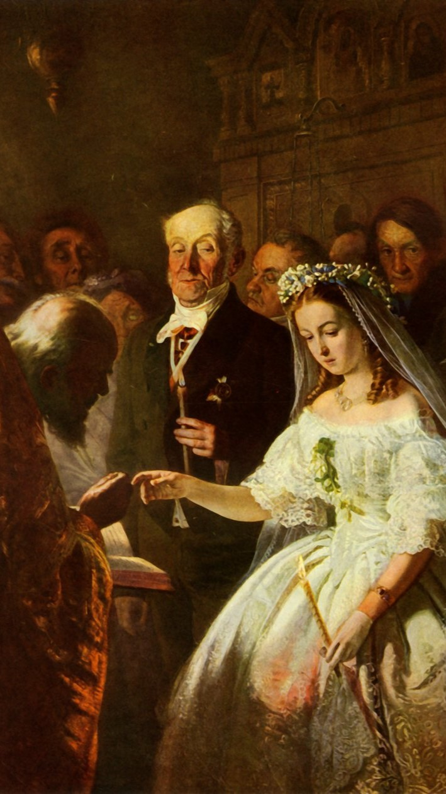
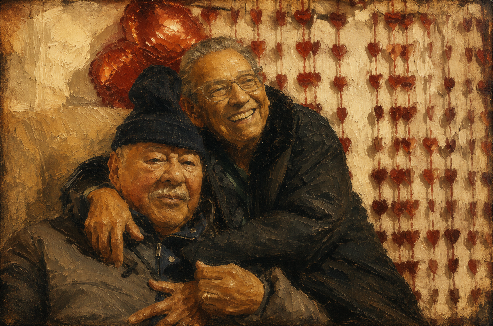

A REALIDADE SOCIAL RETRATADA ALÉM DAS APARÊNCIAS
MUDANÇAS NA FORMA DE AMAR E VIVER JUNTOS

O Casamento Desigual, 1862, Vasili Pukirev.
Durante o século XIX, casar significava muito mais do que apenas amor. Naquela época, os casamentos eram
influenciados pela religião, pela opinião das famílias e até pela condição financeira dos noivos. Com o
passar dos anos, a sociedade mudou, e o jeito de se relacionar também. Hoje, os casamentos são marcados
pela liberdade de escolha, pela igualdade entre o casal e por novas formas de demonstrar amor. Mas
afinal, O QUE REALMENTE MUDOU DO PASSADO PARA OS DIAS ATUAIS?
No século XIX, o casamento era bem diferente do que vemos hoje. Muitas vezes, quem escolhia o parceiro
eram as próprias famílias, e não os noivos. O amor não era o principal motivo do casamento, porque ele
também servia para juntar famílias, dinheiro e status social.
Naquela época, a posição social e o dinheiro tinham muito peso. Ou seja, era comum famílias quererem que
seus filhos casassem com alguém “do mesmo nível” ou até mais rico, para melhorar a vida financeira e a
reputação da família. Hoje, isso ainda pode influenciar em alguns casos, mas o mais comum é as pessoas
escolherem seus parceiros por sentimento e convivência.
As mulheres também tinham bem menos liberdade do que hoje. Depois do casamento, muitas dependiam do
marido e tinham como principal função cuidar da casa e dos filhos. Atualmente, isso mudou bastante:
mulheres estudam, trabalham e buscam sua independência.
Outro ponto importante é o divórcio. No século XIX, separar-se era muito difícil ou até proibido em
muitos lugares, e isso fazia com que muitos casamentos continuassem mesmo sem felicidade. Hoje, o
divórcio é legalizado e visto como uma opção normal quando o relacionamento não dá mais certo. Além
disso, as pessoas costumavam se casar mais cedo no passado, muitas vezes ainda jovens. Hoje em dia, isso
mudou, e a maioria prefere estudar, trabalhar e aproveitar mais a vida antes de pensar em casamento.
Para entender melhor como o casamento mudou, podemos olhar para dados recentes e também para o que
especialistas dizem sobre o assunto.
Uma pesquisa do Instituto Brasileiro de Geografia e Estatística (IBGE),
divulgada em 2023, mostrou que o número de casamentos registrados no Brasil foi de 940,8 mil, o que
representa uma queda de 3% em relação a 2022. Já os divórcios chegaram a 440,8 mil casos, um aumento de
4,9% no mesmo período.
A pesquisadora Klívia Brayner explica que esses números não mostram toda a realidade, já que não incluem
uniões estáveis. Segundo ela, muitas pessoas não deixaram de se relacionar, mas passaram a adiar o
casamento civil ou a optar por outras formas de união.

Entrevistada – Márcia
1. Você acredita que o casamento comprado era uma prática comum em muitas sociedades antigas?
Márcia: Sim, porque os pais eram muito rígidos e buscavam riquezas. Um homem que tivesse um casarão, por exemplo, queria casar a filha com outro homem rico. Muitas vezes, elas eram forçadas a aceitar.
2. Na sua opinião, as mulheres tinham pouca ou nenhuma liberdade para escolher seus parceiros?
Márcia: Não tinham liberdade nenhuma. Quem escolhia eram os pais.
3. Você considera que interesses financeiros eram mais importantes do que os sentimentos nesses casamentos?
Márcia: Sim. Para os pais, os interesses financeiros vinham em primeiro lugar. Pessoas que tinham fazendas, terras e gado obrigavam as filhas a casar com quem elas não queriam, e elas não podiam fazer nada.
4. Você acredita que práticas semelhantes ainda podem existir em algumas regiões do mundo atualmente?
Márcia: Pode ser que sim.
5. Na sua opinião, a família deveria ter o direito de decidir com quem alguém deve se casar?
Márcia: Claro que não. A família não tem o direito de escolher por ninguém. A própria pessoa deve decidir com quem quer viver.
6. Quais você acredita que foram os principais motivos para a realização de casamentos comprados antigamente?
Márcia: Os motivos eram mais dos pais do que dos filhos. Eles buscavam interesses e riquezas.
7. Como você acha que essa prática afeta a vida e os direitos das mulheres?
Márcia: Afeta muito o psicológico delas e tira o direito de escolher a pessoa que amam. Isso causa sofrimento emocional e tira o direito de dizer “não”.
8. Na sua opinião, quais consequências emocionais poderiam surgir para pessoas envolvidas em um casamento comprado?
Márcia: A pessoa pode nunca mais querer se relacionar com ninguém. Isso gera trauma, medo e tristeza.
Ouça a entrevista completa com Márcia, trazendo reflexões sobre os casamentos por interesse, a liberdade de escolha e as mudanças sociais ao longo do tempo.
Assista à reportagem completa, produzida pelos integrantes da Gazeta das Conveniências, abordando os impactos dos casamentos por interesse, a falta de liberdade feminina no passado e as mudanças na forma de amar ao longo das gerações.